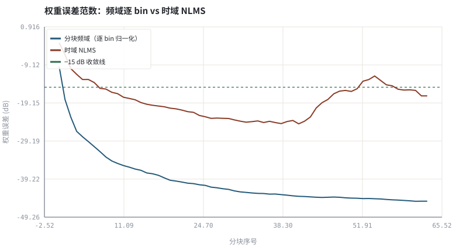
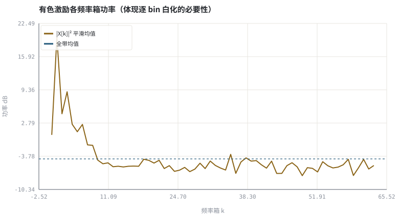

第 06 章频域自适应滤波：FDAF、分块 MDF 与收敛
把 NLMS 的逐点乘加换成 FFT 后的逐 bin 标量乘，长回声路径才跑得动。
本章位置：第 04 章 · 线性系统、卷积与频域实现 给出固定系数的分块卷积，第 05 章 · 自适应滤波：LMS、NLMS 与收敛 给出时域 NLMS，本章把两者合并；第 07 章 · 双讲检测、时延漂移与路径突变 处理双讲与时延漂移，第 09 章 · AEC 总体结构：参考信号、线性滤波与残余抑制 起把它装进完整 AEC。
时域 NLMS 是对长度 L 的数组做逐元素梯度下降；FDAF 先 FFT 到近似对角的坐标系，再对每个坐标单独设学习率——等价于给优化器加了一层预条件器。块长 B 就是流式系统的 batch size，也是算法延迟的下界。
- 能写出分块频域卷积的 overlap-save 数据帧结构与补零条件。
- 能推导频域 LMS 的逐 bin 归一化更新式，并说明它为何对有色激励更快。
- 能解释 MDF 如何把长滤波器拆成若干短块以压低算法延迟。
- 能运行实验，用权重误差曲线与 ERLE 核对频域辨识的收敛。
§知识点地图
每个知识点都配了 1～2 个扩展学习链接；本章完整资源清单见 扩展学习。
| # | 知识点 | 扩展学习 | 状态 |
|---|---|---|---|
| 1 | overlap-save 分块 | Stanford CCRMA · Julius O. Smith ↗ · SciPy signal ↗ | 正文已覆盖 |
| 2 | 循环卷积与补零 | The Scientist and Engineer's Guide to DSP ↗ · SciPy signal ↗ | 正文已覆盖 |
| 3 | 频域 LMS (FLMS) | Least mean squares filter ↗ · Stanford CCRMA · Julius O. Smith ↗ | 正文已覆盖 |
| 4 | 逐 bin 功率归一化 | Stanford CCRMA · Julius O. Smith ↗ · SciPy signal ↗ | 正文已覆盖 |
| 5 | MDF 多延迟分块 | RFC 3550 RTP ↗ · MDN Web Audio API ↗ | 正文已覆盖 |
| 6 | 分块数与算法延迟 | RFC 3550 RTP ↗ · MDN Web Audio API ↗ | 正文已覆盖 |
| 7 | 有色激励与特征值分散 | Stanford CCRMA · Julius O. Smith ↗ · SciPy signal ↗ | 正文已覆盖 |
| 8 | 频域权重约束 | Cooley–Tukey FFT ↗ · SciPy signal ↗ | 正文已覆盖 |
§6.1为什么时域 NLMS 在长路径上不够用
时域 NLMS: w[n+1] = w[n] + μ·e[n]·x[n] / (‖x[n]‖² + δ) ，每样本 O(L)
16 kHz 下覆盖 128 ms 混响需 L≈2048 抽头。时域每输出样本做 2048 次乘加，约 33 M 次/秒；分块频域把长度 L 的卷积变成 N 点 FFT 后的逐点乘，每样本代价降到 O(log N)。第 04 章 · 线性系统、卷积与频域实现 讲的是固定系数的卷积，第 05 章 · 自适应滤波：LMS、NLMS 与收敛 让系数在线学习，本章把两者合并。
| 实现 | 每样本代价 | L=2048 量级 | 算法延迟 |
|---|---|---|---|
| 时域 NLMS | O(L) | 约 2048 乘加 | 1 样本 |
| 单块 FLMS | O(log N) | 约 11 复数乘 | N 样本（整块） |
| 分块 MDF | O(P·log N) | P 个短块并行 | B 样本（仅一块） |
overlap-save 的『块』是输入数据流的时间分块，决定算法延迟；MDF 的『分块』是把长 h 切成 P 段、每段单独做频域自适应，决定单块 FFT 长度。两者叠加就是 WebRTC AEC3 主滤波器的结构。
§6.2频域更新式：每个 bin 是一个独立的标量回归
Xₚ[k] = FFT{histₚ ⊕ xₚ} ，Yₚ[k] = Wₚ[k]·Xₚ[k] ，eₚ = 取 IFFT{Yₚ} 的有效尾部
Wₚ[k] ← Wₚ[k] + μ·Eₚ[k]·Xₚ*[k] / (Pₚ[k] + δ) ，Pₚ[k] = α·Pₚ[k] + (1−α)·|Xₚ[k]|²
关键在分母 Pₚ[k]：每个频率箱按自己的能量归一化。语音是强有色信号，低频 bin 功率可能比高频大几十 dB；时域 NLMS 只有一个全局 ‖x‖²，等效学习率被最大特征值卡住，而频域按 bin 白化后各 bin 可同时快速收敛。这与 Adam / RMSProp 按参数尺度自适应学习率同源。
E·X* 是圆周卷积梯度，IFFT 后尾部会出现环绕抽头。每块更新后要把 W 变回时域、只保留前 L 个系数、尾部清零再 FFT 回去，否则滤波器长度被悄悄放大，产生时域混叠。
§6.3实验里怎么判断『收敛了』
- 权重误差范数：10log₁₀(‖W−H‖²/‖H‖²)，比只看 e² 更能说明辨识的是真实路径。
- 收敛迭代数：曲线首次跌破 −15 dB 的分块序号，可随 μ 与激励类型复算。
- ERLE：把收敛后的 W 变回时域 ŵ，用 fft_convolve 重算回声并相减，核对能量比。
本实验用逐 bin 最小二乘递推代替带 μ 的梯度步：Sxxₚ[k] 累加 |Xₚ[k]|²、Sxyₚ[k] 累加 Dₚ[k]·Xₚ*[k]，则 Wₚ[k] = Sxyₚ[k]/(Sxxₚ[k]+δ)。它没有步长发散风险，正好把『逐 bin 归一化』单独放大，便于与时域 NLMS 对照。
W[k] = Sxy[k] / (Sxx[k] + δ) ，Sxx[k] = Σₚ|Xₚ[k]|² ，Sxy[k] = Σₚ Dₚ[k]·Xₚ*[k]
§Python 实验
实验 6-1 · 分块频域辨识 vs 时域 NLMS：收敛、bin 功率与 ERLE
#!/usr/bin/env python3
# -*- coding: utf-8 -*-
"""在有色激励下对照频域逐 bin 最小二乘辨识与时域 NLMS 的收敛，输出权重误差、收敛块号与 ERLE。
全部语音 / 噪声 / 房间冲激响应均为代码合成信号，仅用于教学演示机制与量级。
"""
from __future__ import annotations
import math
import pathlib
import random
import statistics
import sys
import time
_here = pathlib.Path(__file__).resolve()
for _p in _here.parents:
if (_p / "tools" / "dsp.py").exists():
sys.path.insert(0, str(_p / "tools"))
break
from dsp import (SAMPLE_RATE, fft, hann, stft, istft, magnitude_db, spectrum,
white_noise, tone, chirp, synthetic_speech, rir, convolve,
fft_convolve, delay, clip, normalize_peak, rms, rolling_rms,
smooth, db, energy_db, snr_db, erle_db, seg_snr_db,
scale_align, si_sdr_db, lufs_approx,
write_wav, read_wav, wav_info)
from chart import Chart, heatmap, BLUE, RED, GREEN, AMBER
FIG = _here.parents[1] / "fig"
AUDIO = _here.parents[1] / "audio"
FIG.mkdir(exist_ok=True)
AUDIO.mkdir(exist_ok=True)
random.seed(7)
# ---- 参数区 ----
N = 4096 # 约 0.25 s @ 16 kHz
NF, L, B = 128, 64, 64 # FFT 长度 / 滤波器抽头 / 每块新样本，满足 NF ≥ B+L−1
NB = N // B # 分块数
MU = 0.45 # 时域对照 NLMS 步长
DELTA = 0.02 # 频域分母正则项（过大会拖慢收敛）
OBS_NOISE = 0.02 # 频域观测扰动（模拟近端/量化噪声）
# ---- 计算与作图 ----
rng = random.Random(7)
far = [0.75 * a + 0.25 * b for a, b in
zip(synthetic_speech(rng, N), white_noise(rng, N, 0.18))]
h = rir(rng, L, decay=0.004, direct_delay=12)
echo = fft_convolve(far, h)[:N]
hr, hi = fft(h + [0.0] * (NF - L), [0.0] * NF)
den_h = sum(hr[k] ** 2 + hi[k] ** 2 for k in range(NF))
Sxx = [1e-6] * NF
Sxy_r, Sxy_i = [0.0] * NF, [0.0] * NF
hist = [0.0] * (NF - B)
curve_fd, bin_power = [], []
for b in range(NB):
xnew = far[b * B:(b + 1) * B]
frame = hist + xnew
xr, xi = fft(frame[:], [0.0] * NF)
dr = [hr[k] * xr[k] - hi[k] * xi[k] + rng.gauss(0, OBS_NOISE) for k in range(NF)]
di = [hr[k] * xi[k] + hi[k] * xr[k] + rng.gauss(0, OBS_NOISE) for k in range(NF)]
for k in range(NF):
p = xr[k] * xr[k] + xi[k] * xi[k]
Sxx[k] += p
Sxy_r[k] += dr[k] * xr[k] + di[k] * xi[k]
Sxy_i[k] += di[k] * xr[k] - dr[k] * xi[k]
wr = [Sxy_r[k] / (Sxx[k] + DELTA) for k in range(NF)]
wi = [Sxy_i[k] / (Sxx[k] + DELTA) for k in range(NF)]
num = sum((wr[k] - hr[k]) ** 2 + (wi[k] - hi[k]) ** 2 for k in range(NF))
curve_fd.append(10 * math.log10(num / (den_h + 1e-12) + 1e-12))
hist = frame[B:]
if b == NB // 2:
bin_power = [10 * math.log10(Sxx[k] / (b + 1) + 1e-9) for k in range(NF // 2)]
w = [0.0] * L
curve_td = []
for b in range(NB):
for off in range(B):
n = b * B + off + L
if n >= N:
break
xv = [far[n - i] for i in range(L)]
y = sum(w[i] * xv[i] for i in range(L))
e = echo[n] - y + rng.gauss(0, OBS_NOISE) # 与频域分支一致的观测噪声
p = sum(v * v for v in xv) + 1e-3
for i in range(L):
w[i] += MU * e * xv[i] / p
num = sum((w[i] - h[i]) ** 2 for i in range(L))
den = sum(v * v for v in h)
curve_td.append(10 * math.log10(num / (den + 1e-12) + 1e-12))
wt, _dummy = fft(wr[:], wi[:], inverse=True)
w_hat = wt[:L]
y_hat = fft_convolve(far, w_hat)[:N]
residual = [echo[i] - y_hat[i] for i in range(N)]
def first_below(curve, thr):
for i, v in enumerate(curve):
if v < thr:
return i + 1
return -1
c = Chart(FIG / "06-convergence.svg", "权重误差范数：频域逐 bin vs 时域 NLMS",
xlabel="分块序号", ylabel="权重误差 (dB)")
c.line(range(NB), curve_fd, BLUE, label="分块频域（逐 bin 归一化）")
c.line(range(NB), curve_td, RED, label="时域 NLMS")
c.hline(-15.0, GREEN, label="−15 dB 收敛线")
print("收敛图:", c.save())
d = Chart(FIG / "06-bins.svg", "有色激励各频率箱功率（体现逐 bin 白化的必要性）",
xlabel="频率箱 k", ylabel="功率 dB")
d.line(range(len(bin_power)), bin_power, AMBER, label="|X[k]|² 平滑均值")
d.hline(statistics.fmean(bin_power), BLUE, label="全带均值")
print("功率图:", d.save())
write_wav(AUDIO / "06-far.wav", normalize_peak(far))
write_wav(AUDIO / "06-echo.wav", normalize_peak(echo))
write_wav(AUDIO / "06-residual.wav", normalize_peak(residual))
print("采样率=%d Hz 分块数=%d FFT=%d 抽头=%d 块长=%d" % (SAMPLE_RATE, NB, NF, L, B))
print("频域收敛到 −15dB 的块号=%d 时域=%d | 末块权重误差 频域=%.2f dB 时域=%.2f dB" %
(first_below(curve_fd, -15.0), first_below(curve_td, -15.0), curve_fd[-1], curve_td[-1]))
print("ERLE(收敛权重重算回声)=%.2f dB | 残余/回声 RMS=%.4f" %
(erle_db(echo, residual), rms(residual) / (rms(echo) + 1e-9)))操作：先对照两条收敛曲线与 −15 dB 线；再听 06-echo.wav 与 06-residual.wav；把 MU 调小看时域曲线如何变慢。 预期与判读：两条分支使用同样的观测噪声；频域逐 bin 归一化在有色激励下第 2 块就跌破 −15 dB，时域 NLMS 要到第 8 块，末块权重误差相差约 28 dB。ERLE 为正（本例约 58 dB）且随权重误差下降而升高。
改参数看趋势：把 DELTA 调大两个数量级，两个算法的收敛都会变慢；把 far 换成纯 white_noise，时域 NLMS 的差距会缩小。 文件位置：part1/06-fdaf/code/06-fdaf.py


06-far.wav
远端参考信号（有色合成语音）（16 kHz / 16-bit 单声道，代码合成信号，不是真实录音）
06-echo.wav
经房间路径卷积后的回声（16 kHz / 16-bit 单声道，代码合成信号，不是真实录音）
06-residual.wav
收敛后的频域滤波器抵消残差（16 kHz / 16-bit 单声道，代码合成信号，不是真实录音）
代码块右上角可一键复制；仓库里的 code/*.py 由 tools/extract_code.py 从这些代码块自动抽取。脚本只用标准库、固定 random.seed(7)，运行后写出 fig/*.svg 与 audio/*.wav；批量运行用 ./tools/run_python.sh。
§可选真机命令片段
以下命令不参与批量运行，需要本机自行安装对应工具。滤镜是否可用取决于本机 ffmpeg 版本与编译选项，请先用 ffmpeg -filters / ffmpeg -version 自查，并以 https://ffmpeg.org/ffmpeg-filters.html 与各自官方文档为准；本书不假定任何特定版本具备某项能力。
本机自查 FFT/滤波工具与官方入口
python3 -c 'import sys; print(sys.version)' && ffmpeg -hide_banner -filters | grep -E 'afftdn|aresample'说明：命令只做本机能力自查；ffmpeg 滤镜是否可用、参数名与引入版本以 https://ffmpeg.org/ffmpeg-filters.html 与本机 ffmpeg -filters 输出为准，本书不假定任何特定版本。
查 WebRTC AEC3 分块频域源码入口
git ls-remote https://webrtc.googlesource.com/src HEAD说明：只检查仓库可达性；AEC3 分块 MDF 结构以 https://webrtc.googlesource.com/src/+/refs/heads/main/modules/audio_processing/aec3/ 官方源码为准，本书不假定任何特定版本。
§本章参考资料
按本章知识点挑选的精读资料；更多检索入口见 扩展学习。
§相关开源工程
下列工程仅作技术参照，版权与许可证归各自维护者所有。本书实验不依赖它们，也与之无从属关系。
§常见误区
- FFT 长度不满足 N ≥ B+L−1，圆周卷积绕回造成时域混叠。
- 频域更新后不做时域抽头约束，滤波器长度悄悄增长。
- 逐 bin 分母用全局功率而非 P[k]，白化优势消失。
- 把整块 FFT 的 N 样本延迟当成 1 样本，实时预算算错。
§习题与思考
- 推导 N ≥ B+L−1，并说明 MDF 把 L 切成 P 段后单块 FFT 长度如何变化。
- 解释为什么有色激励下时域 NLMS 收敛慢，而逐 bin 归一化能加速。
- 把块长 B 减半，估算 FFT 次数、算法延迟与收敛块数的变化。
§扩展学习
继续检索
- Google Scholar：frequency domain adaptive filter FDAF partitioned block ↗
- arXiv：frequency domain adaptive filter FDAF partitioned block ↗
- GitHub：frequency domain adaptive filter FDAF partitioned block ↗
全书链接总表见 FFmpeg Filters 文档 ↗ 与 附录 A.7；滤镜是否可用请以本机 ffmpeg -filters 为准。
§延伸阅读与内链
- 第 10 章 · 用 NLMS 实现一个可验证的 AEC 用 NLMS 实现完整可验证的 AEC；第 11 章 · 残余回声抑制与 WebRTC AEC3 结构 AEC3 的两级残余抑制结构。